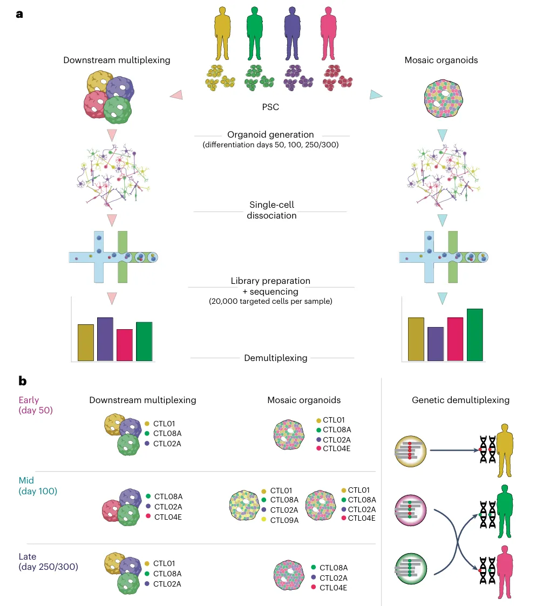
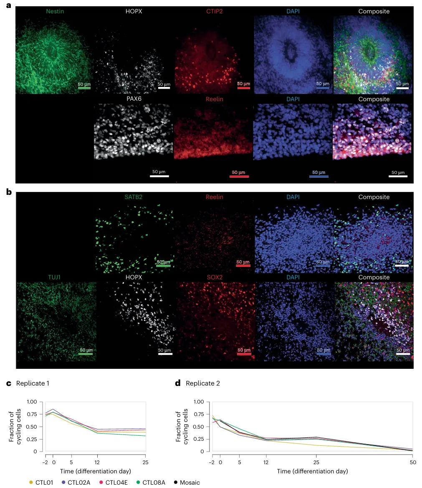
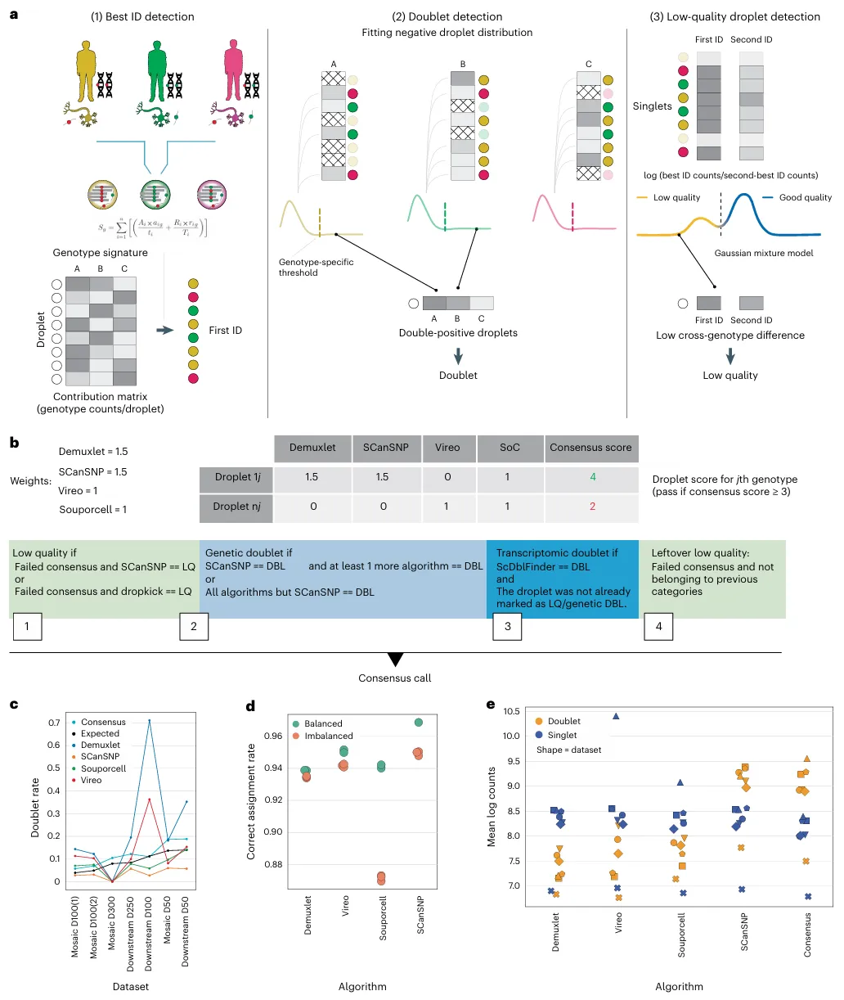
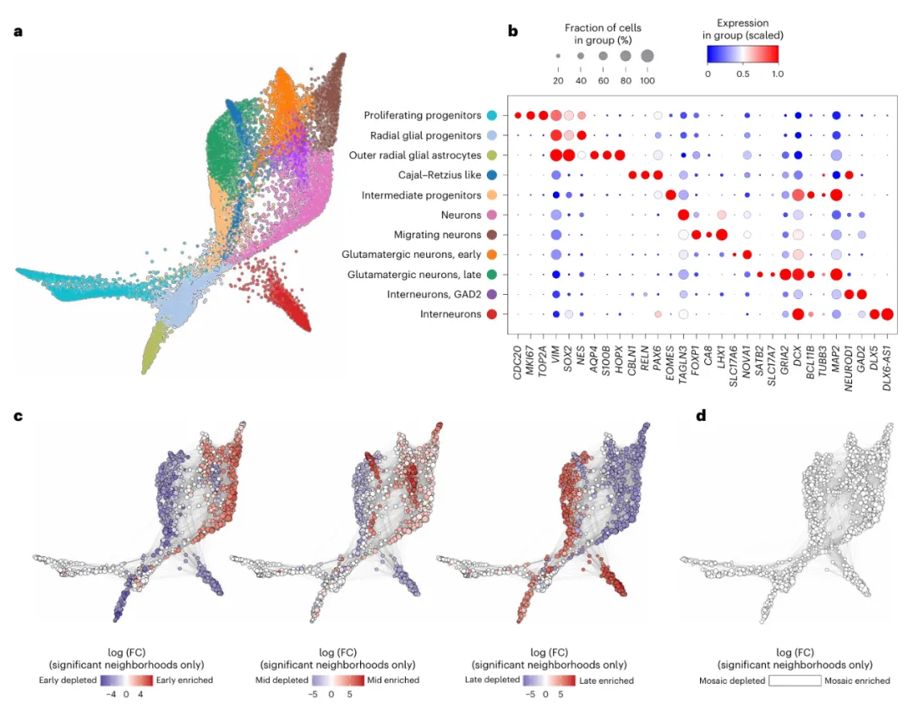
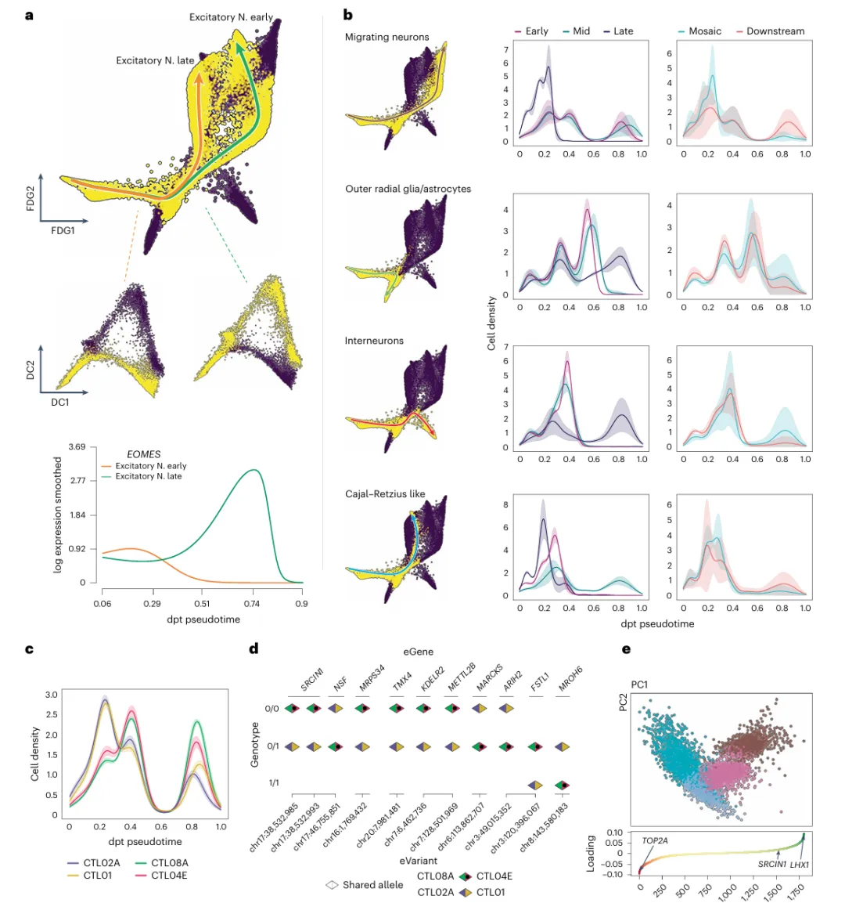
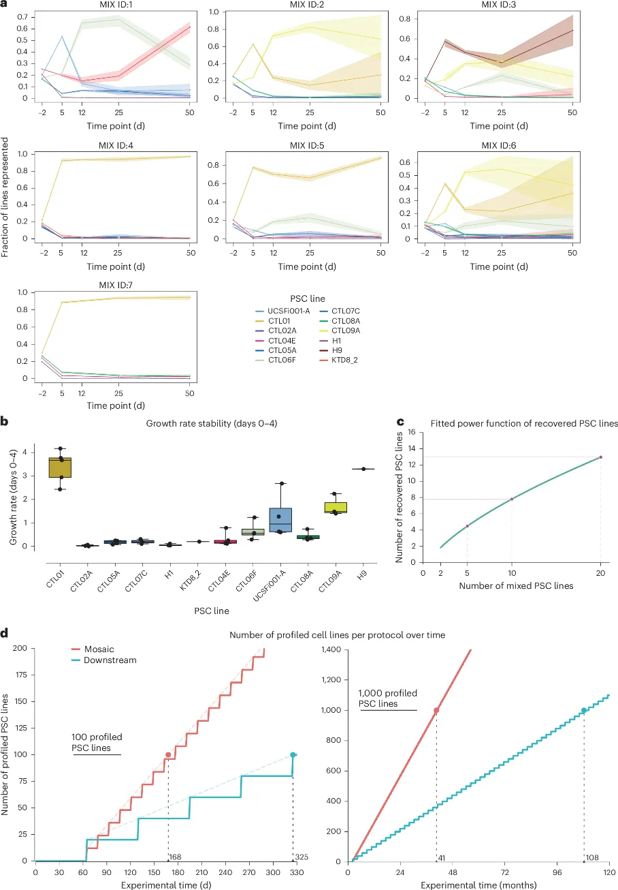

《Nature Methods》|单细胞联合类器官技术解析人脑发育特征
原文：https://mp.weixin.qq.com/s?__biz=MzAwMzIzOTk5OQ==&mid=2247528124&idx=1&sn=dc5e4d511f14f9ce2ad0f63819dab0c1&chksm=9b3c17ecac4b9efa0e3b5cfc8bb91ff4e550da211c5129253799e2e343f9ecd52b5ea9e42049#rd 合集：单细胞教程全收录 / 文献速递 / 粉丝来稿
一、写在前面
本次分享的是2024年12月发布于《Nature Methods》的文章**(**IF ：36.1)，****感兴趣的同学可以看看原文： Nicolo Caporale, Davide Castaldi, Marco Tullio Rigoli, et al., "Multiplexing cortical brain organoids for the longitudinal dissection of developmental traits at single-cell resolution" nature methods, 2024, doi:10.1038/s41592-024-02555-5 .目前，人们对生理和病理学上神经多样性的了解仍非常有限，虽然脑类器官和单细胞多组学技术在人类神经发育的机制解析方面取得了重大进展，使研究人员能够从遗传和环境因素的角度深入研究神经疾病的成因，但在单细胞分辨率下对整个队列甚至整个人群规模的脑类器官进行特征分析仍存在挑战。 这篇文章中，作者聚焦了两种创新性策略：嵌合类器官（mosaic organoids）和下游多重化（downstream multiplexing）。这两种方法突破了实验和分析的传统限制，使得研究人员能够在单细胞分辨率下同时观察多个遗传背景对神经发育的影响，结合高精度的计算工具SCanSNP，这些方法为解析细胞间的动态交互和遗传-环境协同效应提供了革命性手段。
如果大家需要数据库搭建、分析指导 、生信热点全文复现 、自测数据个性化分析 辅导，欢迎联系客服微信[Biomamba_yunying]
对scRNA-seq分析感兴趣的同学可参考： scRNA-Seq学习手册Seurat V5更新版单细胞教程索引
二、技术原理
嵌合类器官（ Mosaic Organoids）****
嵌合类器官 的核心在于将来自多个供体的多能干细胞（PSCs）按等量混合，在类器官生成的早期阶段共同培养，从而形成包含不同遗传背景细胞的类器官。这种方法的主要目的 是研究不同基因型的细胞 在共同微环境中的表现差异，尤其适合解析细胞间的相互作用、竞争关系以及非细胞自主效应 。
实验流程(Fig. 1)****
1.细胞混合 ：将多个供体的PSCs按等量比例混合。
2.类器官生成 ：诱导混合细胞生成类器官，并在特定时间点（如50天、100天和300天）进行取样。
3.单细胞测序 ：通过单细胞RNA测序（scRNA-seq）分析细胞组成和发育轨迹。
4.基因型追踪 ：利用基因型标记追踪每个供体细胞在发育过程中的比例和行为。
下游多重化（ Downstream Multiplexing）****
下游多重化的核心在于**“ 先独立生成类器官，再混合进行单细胞分析”。与嵌合类器官不同，下游多重化不会在类器官生成阶段混合来自不同供体的细胞，而是让每个供体的多能干细胞（PSCs）独立生成类器官。这些类器官在发育完成后被解离成单细胞，然后按等比例混合，进行单细胞RNA测序。其适合单一遗传背景的独特表现且适用于需要精确比例控制的研究。******
实验流程(Fig. 1)****
1.独立生成类器官 ：每个供体的PSCs分别生成独立的类器官。
2.细胞解离与混合 ：在类器官发育完成后，将其解离成单细胞，并按等比例混合。
3.单细胞测序 ：对混合的单细胞进行单细胞RNA测序（scRNA-seq）。
4.细胞身份溯源 ：通过遗传标记对每个细胞的供体来源进行溯源分析。
Fig.1

三、主要结果
1.嵌合皮质脑类器官（mCBOs）实验评估
作者通过免疫荧光技术检测神经发育的经典标记物，结果显示这些标记物的表达模式与之前使用分化条件相同的研究结果一致 （Fig. 2a）。通过流式细胞术对单独分化的PSC系进行细胞周期分析，结果显示不同 PSC系的增殖趋势相似，且在分化过程中增殖率逐渐降低，未发现显著的时间依赖性差异（Fig. 2b）。通过转录组学进行基因型平衡分析，结果显示不同 PSC系在mCBO分化过程中表现出不同程度的平衡性（Fig. 2c）。
这些结果表明，mCBOs在发育过程中能够保留不同 PSC系的特征，但其基因型比例 可能会因嵌合培养而发生变化，这种异质性 为研究细胞间相互作用和遗传背景对神经发育的影响提供了重要的模型基础。
Fig.2

2.技术创新与计算工具**-SCanSNP**
为提高多重化策略的准确性和可靠性，作者开发了全新的计算工具SCanSNP （Fig. 3a）。该工具优化了单细胞数据的基因型分类及双细胞检测，显著提升了解析能力。
SCanSNP 通过以下步骤提高了解复用的准确性（Fig.3b）：****
1.身份分配：通过最大化每个细胞滴液与供体基因型的匹配度，分配最佳身份。****
2.双细胞检测：通过分析基因型贡献矩阵，检测可能的双细胞。****
3.低质量滴液识别：通过评估每个滴液的遗传纯度，识别并排除低质量数据。****
****在基准测试中，SCanSNP 表现出色，尤其是在处理平衡和不平衡基因型数据时，其准确性显著优于其他算法 。例如：在模拟数据集中，SCanSNP在平衡和不平衡条件下均表现出最高的解复用准确性（Fig.3c）。在条形码标记的实验数据中，SCanSNP的性能也得到了验证（Fig.3d-e）。
Fig.3

3-1.应用解读-神经发育的细胞组成
在对单细胞转录组数据进行解复用后，作者排除了双细胞和低质量细胞，对来自不同多能干细胞（PSC）系的细胞进行了分析。结果显示**放射状胶质细胞（ Radial glia）**早期占比高达35%，标志基因为PAX6、SOX2。**兴奋性神经元（ Excitatory neurons）**在300天后，占比增至40%以上，标志基因为NEUROD2、SLC17A7。**抑制性神经元（ Inhibitory neurons）**在中期显著增多，占比约20%，标志基因为DLX2、GAD1。星形胶质细胞（ Astrocytes）在晚期分化阶段出现，占比逐渐上升，标志基因为GFAP和S100B（Fig.4a-b）。除此之外，作者通过Milo分析确认了不同时间点之间细胞类型丰度的显著差异 （Fig.4c-d），进一步支持了细胞类型随发育阶段动态变化的结论。
Fig.4

3-2.应用解读-高度异质性CBOs 的发育轨迹分析
作者首先通过分区图抽象（Partition-based Graph Abstraction, PAGA）分析了生物学相关谱系并通过扩散伪时间（Diffusion Pseudotime, dpt）分析研究了不同时间点和多路复用模式下单细胞在这些神经发育轨迹上的分布，最后通过广义加性模型的轨迹差异表达分析工具（tradeSeq）来识别驱动每条分化谱系的关键基因。结果显示** EOMES*是导致这两条路径差异的关键驱动基因 （Fig.5a）。伪时间分析展示了CBOs 能够很好地重现人类皮质发生过程中的关键神经发育轨迹（Fig.5b），特定 SNP（如SRCIN1相关）被识别为伪时间轨迹差异的主要驱动因子（Fig.5c-d）。除此之外，作者还利用PCA 分析进一步确认了基因型对迁移神经元发育的影响（Fig.5e）。***
Fig.5

**3-3.应用解读 -**12 种不同多能干细胞（PSC）系的生长速率
为探索嵌合脑类器官（ mCBOs）的可扩展性及其在单细胞水平上暴露内表型的敏感性，作者通过对12种PSC细胞系的纵向成像分析，记录了它们在多能性维持阶段和CBO分化过程中的生长速率， 并结合了Census-seq测量的特定PSC比例建模了每种PSC系在多能性和CBO分化过程中的生长动态（Fig.6a-b）。此外，研究人员还比较了不同多路复用方法对大规模疾病建模研究所需实验时间线的影响，结果显示mCBOs 作为一种高通量工具，能够显著缩短实验时间（ Fig.6c-d）。总的来说mCBOs作为一种强大的工具，能够在大规模疾病建模和药物筛选中显著提高实验效率。
Fig.6

四、学习手册
对scRNA-seq分析感兴趣的同学可参考：
scRNA-Seq学习手册Seurat V5更新版单细胞教程索引

如何联系我们

 公众号后台消息回复不便，这里给大家留一下领取资料及免费服务器(免费两周学习版上架啦~)的微信号 ，方便各位随时交流（别问在么，添加时直接说来意）。同时我们也构建了交流群矩阵，欢迎大家入群讨论。
公众号后台消息回复不便，这里给大家留一下领取资料及免费服务器(免费两周学习版上架啦~)的微信号 ，方便各位随时交流（别问在么，添加时直接说来意）。同时我们也构建了交流群矩阵，欢迎大家入群讨论。
大家可以阅读完这几篇之后添加给生信入门初学者的小贴士 如何搜索公众号过往发布内容
已有生信基地联系方式的同学无需重复添加

 您点的每个赞和在看，我都认真当成了喜欢
您点的每个赞和在看，我都认真当成了喜欢